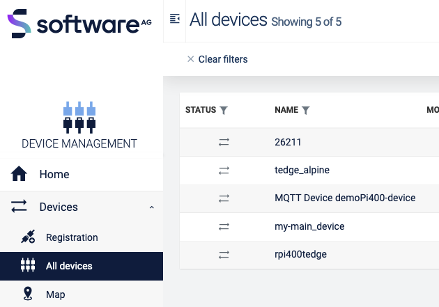
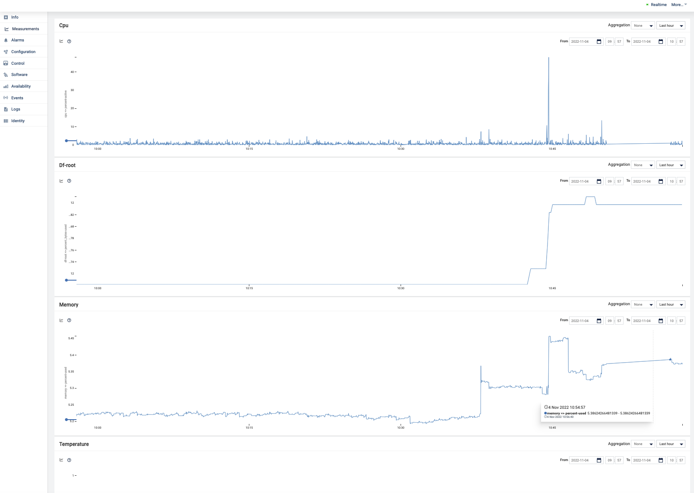
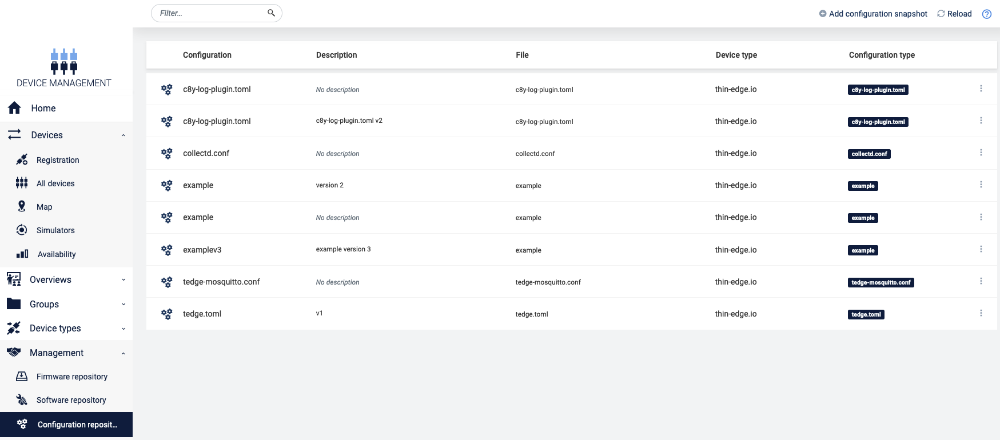
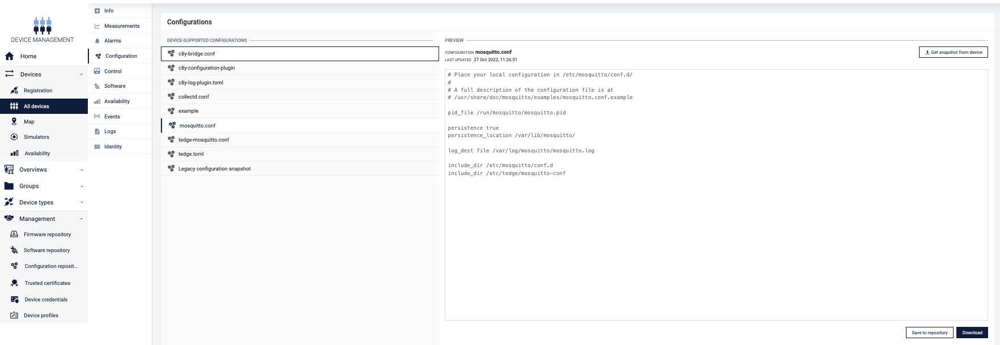
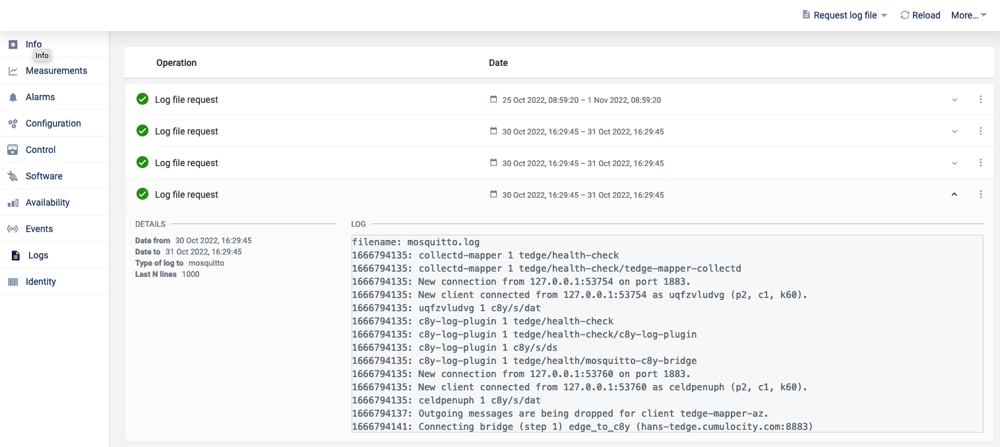

Getting started with thin-edge.io on a Raspberry Pi
After following this tutorial you will have an overview of the installation and configuration of thin-edge.io. As an example, a Raspberry Pi is used. This tutorial explains in small steps to reach the goal of sending data to Cumulocity IoT and performing some additional device management tasks.
Introduction
thin-edge.io is an open-source project to provide a cloud-agnostic edge framework. It is much more generic than the device management agent, so it can connect to multiple IoT cloud platforms, and it allows flexible logic executed on the device. It is optimized for a very small footprint and high performance.
The Raspberry PI is a relatively simple and cheap device but powerful. Therefore it is ideal for testing and try-outs and some production use cases.
Prerequisite
To follow this guide, you only need the following:
-
A Cumulocity IoT Trial tenant.
-
A Raspberry Pi (3 or 4) with Raspian installed, for other boards and OS'es have a look here
-
Updated device:
sudo apt-get update && sudo apt-get upgrade
Steps
This tutorial is divided into small steps. The first three steps are needed to install and connect to Cumulocity IoT. The last three are optional but needed to get a good overview of the capabilities of thin-edge.io.
Step 2 Configure and Connect to Cumulocity IoT
Step 5 Add software management
Step 6 Manage configuration files
Step 1 Install thin-edge.io
There are two ways to install thin-edge.io:
- Use a script
- Manually
The easiest way is to use the installation script with this command:
curl -fsSL https://raw.githubusercontent.com/thin-edge/thin-edge.io/main/get-thin-edge_io.sh | sudo sh -s
This script will install the latest version of thin-edge.io with the following components:
- Mosquitto
- Command line Interface (CLI) tool
- Tedge mapper
It is possible to do the installation of thin-edge.io manually or install another version or upgrade the current version. For more information on that, please have a look here for more information.
After a successful installation, it is possible to use thin-edge.io via the CLI and use the tedge commands.
Tedge CLI
In the previous step, the CLI tool is installed, which is a very powerful
The usage is as follows:
tedge [OPTIONS] [SUBCOMMAND]
and -h can be used to see the help for the latest subcommand.
When running this command something similar like the following will be displayed:
sudo tedge -h
tedge 0.9.0
tedge is the cli tool for thin-edge.io
USAGE:
tedge [OPTIONS] [SUBCOMMAND]
OPTIONS:
--config-dir <CONFIG_DIR> [default: /etc/tedge]
-h, --help Print help information
--init Initialize the tedge
-V, --version Print version information
SUBCOMMANDS:
cert Create and manage device certificate
config Configure Thin Edge
connect Connect to connector provider
disconnect Remove bridge connection for a provider
help Print this message or the help of the given subcommand(s)
mqtt Publish a message on a topic and subscribe a topic
Here is an overview of the commands for the CLI tool.
The CLI will be used to configure the thin-edge.io installation on the device in the next steps.
Step 2 Configure and Connect to Cumulocity IoT
To connect the device to the Cumulocity IoT it needs to be configured. The following configuration parameter is mandatory:
C8Y URL
This URL is needed to allow the upload of the certificate to the specific tenant and the registration of the device. It can be configured via:
sudo tedge config set c8y.url {{YOUR_C8Y_URL}}
Certificate
thin-edge.io connects via MQTT protocol using a X.509 certificate for authentication. To do so, a certificate must be trusted by Cumulocity IoT. A certificate is trusted when it is added to the trusted certificates and is in an activated state.
First, we need to create the device certificate locally (If the device certificate is already uploaded, directly via the UI to Cumulocity IoT this step can be skipped).
sudo tedge cert create --device-id {{YOUR_UNIQUE_DEVICE_ID}}
The device id is a unique identifier e.g. the MAC address that identifies the physical device.
The certificate is uploaded to the Cumulocity IoT Tenant via:
sudo tedge cert upload c8y --user {{YOUR_USERNAME}}
If the password prompt appears, enter your password.
NOTE: In a production environment, it is not recommended to use the above self-signed certificate, which is for demo purposes. If you plan to use this tutorial as a basis for production, please have a look here: Registering devices using certificates.
Connect
We now are ready to connect the device to Cumulocity IoT. This can be achieved via:
sudo tedge connect c8y
When the connection is established, the device will be created in Cumulocity IoT. When you go to Device Management -> Devices -> All devices, the device is visible in the list.

Step 3 Sending Device Data
Once your device is configured and connected to Cumulocity IoT, you can start sending measurements, events or alarms. In the standard configuration, you can not connect externally to the mosquito broker and thus the messages have to be sent directly from the device itself.
The tedge CLI allows you to send payloads via MQTT the following way:
tedge mqtt pub {{TOPIC}} {{PAYLOAD}}
thin-edge.io comes with a tedge-mapper daemon. This process collects the data from the tedge/# topics and translates them to the tedge payloads on the c8y/# topics which are mapped directly to Cumulocity IoT. The mapper translates simple JSON to the desired target payload for Cumulocity IoT.
Sending measurements
Measurements within Cumulocity IoT represent regularly acquired readings and statistics from sensors.
A simple single-valued measurement like a temperature measurement can be represented in Thin Edge JSON as follows:
{ "temperature": 25 }
With the key-value pair representing the measurement type and the numeric value of the measurement. The endpoint that is supervised by the tedge-mapper for measurements is:
tedge/measurements
The temperature measurement described above can be sent as follows:
tedge mqtt pub tedge/measurements '{ "temperature": 25 }'
Sending events
Events are used to pass real-time information, which is not just plain sensor values, through Cumulocity IoT.
A simple event can be represented in Thin Edge JSON as follows:
{
"text": "A door was closed",
"time": "2022-06-10T05:30:45+00:00"
}
The endpoint that is supervised by the tedge-mapper for events is:
tedge/events/{{event-type}}
So the door open event described above can be sent as follows:
tedge mqtt pub tedge/events/door '{"text": "A door was closed","time": "2022-06-10T05:30:45+00:00"}'
When you go to events (Device management -> your device -> events ), you should see this:

Step 4 Monitor the device
With thin-edge.io device monitoring, you can collect metrics from the device and forward these device metrics to Cumulocity IoT.
thin-edge.io uses the open source component collectd to collect the metrics from the device. thin-edge.io translates the collected metrics from their native format to the thin-edge.io JSON format and then into the cloud-vendor-specific format.
Enabling monitoring on your device is a 3-steps process:
- Install collectd
- Configure collectd
- Enable thin-edge.io monitoring
Install collectd
Because thin-edge.io uses the MQTT plugin of collectd, installation of the Mosquitto client library (either libmosquitto1 or mosquitto-clients) is required.
sudo apt-get install libmosquitto1
To install collectd:
sudo apt-get install collectd-core
Configure collectd
thin-edge.io provides a basic collectd configuration that can be used to collect CPU, memory and disk metrics.
Simply copy the file to the main collectd configuration file and restart the daemon.
sudo cp /etc/tedge/contrib/collectd/collectd.conf /etc/collectd/collectd.conf
sudo systemctl restart collectd
What you should see by now is that data arrives on the collectd/# topics. You can check that via:
tedge mqtt sub collectd/#
The output will be similar like:
tedge mqtt sub 'collectd/#'
INFO: Connected
[collectd/raspberrypi/df-root/percent_bytes-used] 1667205183.407:11.7998857498169
[collectd/raspberrypi/memory/percent-used] 1667205183.408:4.87045198079293
[collectd/raspberrypi/cpu/percent-active] 1667205184.398:1.52284263959391
Enable Collectd
To enable monitoring on your device, you have to launch the tedge-mapper-collectd daemon process. This process collects the data from the collectd/# topics and translates them to the tedge payloads on the c8y/# topics.
sudo systemctl start tedge-mapper-collectd
sudo systemctl enable tedge-mapper-collectd
You can inspect the collected and translated metrics, by subscribing to these topics:
tedge mqtt sub 'c8y/#'
The output will be similar like:
tedge mqtt sub 'c8y/#'
INFO: Connected
[c8y/measurement/measurements/create] {"type":"ThinEdgeMeasurement","time":"2022-10-31T08:35:44.398000001Z","cpu":{"percent-active":{"value":1.26262626262626}},"memory":{"percent-used":{"value":4.87024847292786}}}
[c8y/measurement/measurements/create] {"type":"ThinEdgeMeasurement","time":"2022-10-31T08:35:45.398000001Z","memory":{"percent-used":{"value":4.87024847292786}},"cpu":{"percent-active":{"value":1.01522842639594}}}
[c8y/measurement/measurements/create] {"type":"ThinEdgeMeasurement","time":"2022-10-31T08:35:46.398000001Z","memory":{"percent-used":{"value":4.87024847292786}},"cpu":{"percent-active":{"value":0.759493670886076}}}
[c8y/measurement/measurements/create] {"type":"ThinEdgeMeasurement","time":"2022-10-31T08:35:47.398000001Z","memory":{"percent-used":{"value":4.87024847292786}},"cpu":{"percent-active":{"value":2.01005025125628}}}
[c8y/measurement/measurements/create] {"type":"ThinEdgeMeasurement","time":"2022-10-31T08:35:48.398000001Z","memory":{"percent-used":{"value":4.87004496506279}},"cpu":{"percent-active":{"value":0.254452926208651}}}
The monitoring data will appear in Cumulocity IoT on the device in the measurement section. 
Edit Collectd
To change the monitored data, it is needed to change the collectd.conf. This can be done via Cumulocity IoT. In Step 6 is explained how to do that.
Step 5 Add software management
Software management takes care of allowing installation and management of any type of software from Cumulocity IoT. Since the type is generic, any type of software can be managed. In thin-edge.io this can be extended with plugins. For every software type, a particular plugin is needed.
The following plugins do exist:
- Docker
- APT
- Docker-compose
- Snap
To use those plugins they need to be copied to:
/etc/tedge/sm-plugins
The APT plugin is installed automatically. You can find the other plugins in the repository. Make sure to disconnect/reconnect the device after adding plugins via:
sudo tedge disconnect c8y
sudo tedge connect c8y
Adding new software into the software repository in Cumulocity IoT
-
Go to Cumulocity IoT
-
Go to
Management->Software repository(left in the menu) and clickAdd softwareat the right of the top menu bar. -
In the dialog box, enter a name for the software and confirm it by clicking
Add new, a description and its version. -
thin-edge.io contains a default plugin supporting
debianpackages from bothaptrepositories as well as remote locations. If you prefer to use packages from anaptrepository, select theProvide a file pathoption and give an empty space (' ').

If you would like to use other sources (eg. a file uploaded to your cloud or an external source), provide the full URL to the file.
If you would like to upload your binaries, select Upload a binary option and upload the file to Cumulocity IoT software repository.
- Press
Add Softwarebutton.
Installing software on a device
- Go to Cumulocity IoT
- Click
All devicesin the Devices menu, select the desired device from the device list and open its Software tab.
The Software tab shows a list of all available software installed on the device. If a given software has a type, it will be displayed next to its name. It is possible to search for a particular software by its name or filter the list by software type.
3. Click on Install software, on the bottom of the page
4. Find/select the software which was added to the repository in the previous step.
5. Select the right version and click on install
6. Then click on apply changes, the software will be installed.
When a different version of the already installed software needs to be installed, choose in step 4 the installed software from the list and in step 5 the right version.
Find more information about how to manage the software on a device.
How to develop your own plugins is described here.
Step 6 Manage configuration files
With thin-edge.io it is possible to manage config files on a device by using the Cumulocity IoT configuration management feature as a part of Device Management.
This functionality is directly installed with the initial script. However, it is needed to configure the /etc/tedge/c8y/c8y-configuration-plugin.toml and add the entries for the configuration files which need to be managed. Just copy the following content to that file:
files = [
{ path = '/etc/tedge/tedge.toml' },
{ path = '/etc/tedge/mosquitto-conf/c8y-bridge.conf', type = 'c8y-bridge.conf' },
{ path = '/etc/tedge/mosquitto-conf/tedge-mosquitto.conf', type = 'tedge-mosquitto.conf' },
{ path = '/etc/mosquitto/mosquitto.conf', type = 'mosquitto.conf' }
]
where:
- path is the full path to the configuration file.
- type is a unique alias for each file entry which will be used to represent that file in Cumulocity UI.
Then start the configuration plugin process and enable it on boot by systemctl .
sudo systemctl start c8y-configuration-plugin.service
sudo systemctl enable c8y-configuration-plugin.service
Then navigate to Cumulocity IoT Device Management and the desired device. Open its Configuration tab. You can find c8y-configuration-plugin and more are listed as supported configuration types, as declared in the plugin configuration file. Here you can save the configuration files into the repository or download them.
Change configuration files via Cumulocity IoT.
If there is a need to change one or more configuration files, there is more than one option to follow:
- Create a whole new configuration file
- Change an existing configuration file
In this tutorial the last option is explained, there are some steps to be taken:

-
Save the configuration file to the repository (
Device management -> configuration. In the list of configuration files pick a file to change and click onSave to repository). -
Go to
Management -> configuration snapshots repository. -
Download the configuration file which needs to be changed (the one you saved to the repository in step 1).
-
Edit this file as needed.
-
Click on
Add configuration snapshot(top right). -
Fill the fields, make sure the device type is
thin-edge.io, select the right Configuration type and add the (just edited) configuration file and click onAdd configuration. -
Go back to the device and then to the configuration. In the Available supported configuration you will see the configuration file which was just created. When you click on it, you will see the content.
-
Then click on
send configuration to devicethe configuration file is uploaded to the device. -
If you then click on
get snapshot from device(select the right configuration file in device supported configurations), you will see the change of the configuration file. -
Then click on
send configuration to devicethe configuration file is uploaded to the device. -
If you then click on
get snapshot from device(select the right configuration file in device-supported configurations), you will see the change of the configuration file.

Change collectd configuration file via Cumulocity IoT.
To change the collectd metrics of the device, which are displayed in Cumulocity IoT, the next steps are needed. These are similar to the steps in the previous paragraphs.
-
Add this line
{ path = '/etc/collectd/collectd.conf', type = 'collectd.conf' },to the/etc/tedge/c8y/c8y-configuration-plugin.tomlfile. -
Save the configuration file to the repository
-
Go to
Management -> configurationsnapshots repository -
Download the configuration file which needs to be changed
-
Edit this file as needed
-
Click on
Add configuration snapshot(top right) -
Fill in the fields, make sure the device type is
thin-edge.ioand select the right Configuration type and add the (just edited) configuration file.) and click onAdd configuration -
Go back to the device and then to the configuration. In the Available supported configuration you will see the configuration file which was just created. When you click on it, you will see the content
-
Then click on
send configuration toe devicethe configuration file is uploaded to the device. -
If you then click on get snapshot from device (select the right configuration file in device supported configurations), you will see the change of the configuration file.
Step 7 Manage Log Files
With thin-edge.io it is possible to request log files from a device by using the Cumulocity IoT log request feature as a part of Device Management.
This functionality is also directly installed with the initial script, but some configuration is needed for the /etc/tedge/c8y/c8y-log-plugin.toml and add the entries for the log files that can be requested. Just copy the following content to that file:
files = [
{ type = "software-management", path = "/var/log/tedge/agent/software-*" },
{ type = "mosquitto", path = "/var/log/mosquitto/mosquitto.log" },
{ type = "daemon", path = "/var/log/daemon.log" },
{ type = "user", path = "/var/log/user.log" },
{ type = "apt-history", path = "/var/log/apt/history.log" },
{ type = "apt-term", path = "/var/log/apt/term.log" },
{ type = "auth", path = "/var/log/auth.log" },
{ type = "dpkg", path = "/var/log/dpkg.log" },
{ type = "kern", path = "/var/log/kern.log" }
]
The daemon is started/enabled via:
sudo systemctl start c8y-log-plugin
sudo systemctl enable c8y-log-plugin
To see the content of the log files in Cumulocity IoT, take the following steps:
-
Go to device management and select the right device.
-
Select
Logs. In this screen, you can request Log files -
Click on
Request log file(the top right). -
In the next screen you can select a date range and a type of log.
-
Then click on
Request log file. -
Refresh the page.
-
Click on the requested log file, you should see something similar to this:

If c8y-log-plugin.toml is added to the c8y-configuration-plugin.toml it is possible to do the administration from there.
However, keep in mind that the daemon has to be restarted every time the /etc/tedge/c8y/c8y-log-plugin.toml is touched via the command line.
Final remarks and summary
With this getting started tutorial you gained some insights on how to install and configure thin-edge.io on a Raspberry Pi.
If you didn't try the optional steps in this tutorial, it might be a nice idea to work on these as you then get a better insight into the device management capabilities of thin-edge.io. Other things you can work on are capabilities like working with child devices, building your own plugin etc. Tutorials for that can be found here.